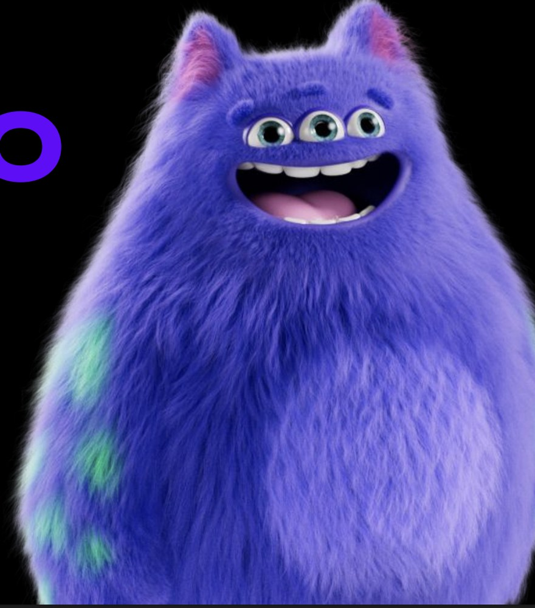
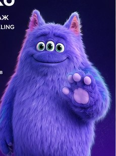
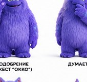
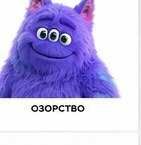
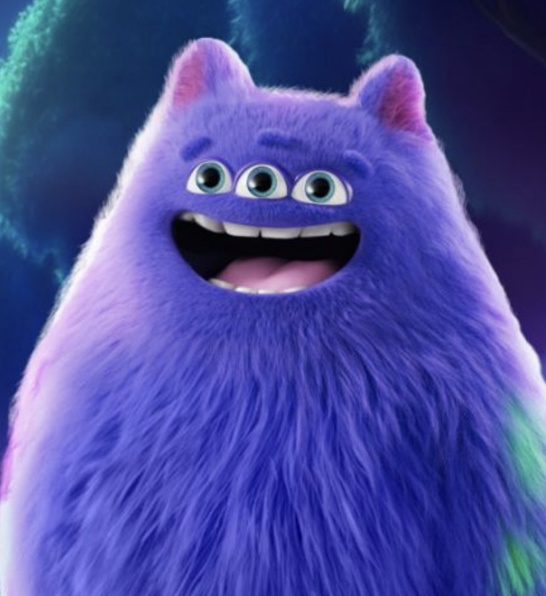
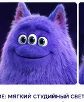
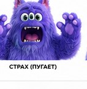
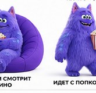

02 · MS · к камере
Мы оживили БубOkko — от сценария до готового ролика с фирменным голосом. Это сделал наш мультимедийный агент. Сначала покажем результат, потом — как он устроен.
Главная боль ИИ-видео — маскот теряет внешность. Мы зафиксировали канон БубOkko по вашей бренд-библии: 3 глаза, 3 брови, 4 пальца, фиолетовый мех с бирюзовыми пятнами, розовые уши, голос-клон — одинаково в каждом кадре.
Каждый кадр продуман: ракурс, оптика, свет, эмоция — по библии БубOkko. Полноценная режиссёрская раскадровка.








Не видеогенератор. Управляемый конвейер, который собирает контент по этапам: бриф → раскадровка → одобрение → рендер. Вы видите и утверждаете каждый шаг.
У дорогих «комбайнов» нет точки одобрения перед рендером — бюджет списывается вслепую. У нас она встроена в механику.
Не понимаешь, за что списали, пока не списали. Результат — лотерея.
Вы утверждаете раскадровку до дорогого рендера. Никаких сюрпризов в счёте.
Мы могли бы «жать кнопку и надеяться». Вместо этого собираем по шагам — и отдаём вам руль на каждом.
Видно, что агент делает и на каком шаге. Никаких чёрных ящиков и непонятных списаний.
Поправить этап можно до того, как он повлияет на финал. Вы у руля, а не постфактум.
Бюджет и сроки под контролем. Качество и бренд-консистентность — тоже.
Текст и бренд-библия — прямо в чат
Этапы видны и редактируемы (Canvas)
Ваша точка контроля до рендера
3D / аватары, бренд-стиль
Клон голоса персонажа
Монтаж и проверка идентичности
Тот же конвейер работает для любого формата — и его легко повторять серийно.
Реакции на голы матчей, «сидит смотрит кино», подборки и анонсы — БубOkko как ведущий по контенту Okko.
Проприетарный браузерный рендер аватаров — лица для промо, объяснялок и кампаний.
16:9 и 9:16, соцсети, стикеры, интерфейс Okko — один герой, много точек контакта.
Технология аватаров — то, чего нет в ядре у горизонтальных «комбайнов».
БубOkko уже оживлён. Давайте превратим его в постоянного героя ваших роликов, соцсетей и кампаний — с контролем бюджета и бренда на каждом шаге.